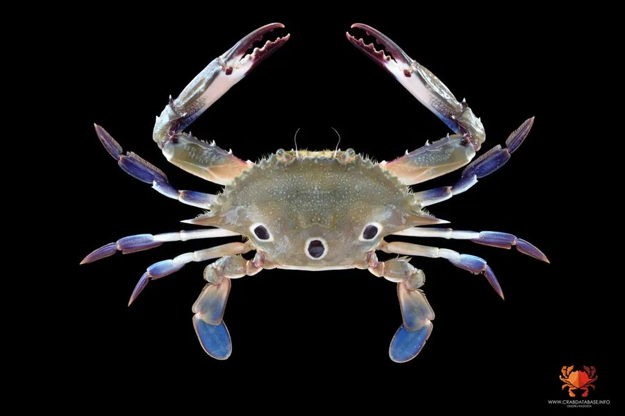

甲壳动物 · 动物界
红星梭子蟹 Portunus sanguinolentus

甲面有三个暗红色圆斑的梭子蟹，俗称三眼蟹，广泛分布于印度—西太平洋的浅海，是沿海常见的食用蟹类。
- 分类
- 门节肢动物门纲软甲纲目十足目科梭子蟹科属梭子蟹属
- 栖息环境
- 沿岸浅海的沙泥底与河口，善于潜沙和游泳
- 地理分布
- 印度—西太平洋，从印度到中国南部、日本和澳大利亚北部
- 保护级别
- 暂无评估
物种志
红星梭子蟹头胸甲呈梭形，甲面光滑，胃区、心区共有 3 个暗红色圆斑，排列成三角形，因此俗称三眼蟹；甲缘有锯齿，末对步足扁平如桨，体色青灰或蓝绿，与沙泥底环境相近。
它生活在沿岸浅海的沙泥底，善于游泳和潜沙，昼伏夜出，捕食贝类、小鱼、虾蟹和底栖动物。红星梭子蟹原产于印度—西太平洋，从印度、东南亚到中国南部、日本和澳大利亚北部都有分布。雌蟹产卵量较大，幼体浮游后沉底。它是沿海常见的食用蟹类，以海捕为主，也有一定养殖；在沙滩和浅海赶海时有时能见到它快速游走。红星梭子蟹白天多埋在沙中，退潮后偶尔能在潮间带浅水处见到它，它游动时姿态轻快。
形态与习性
- 食性捕食贝类、小鱼、虾蟹和底栖动物
- 体型头胸甲宽约 10–15 cm
- 识别甲面有 3 个暗红色圆斑，俗称三眼蟹
- 习性昼伏夜出，善于游泳和潜沙
- 繁殖雌蟹产卵量较大，幼体浮游后沉底
- 经济沿海常见食用蟹类，以海捕为主
趣味知识
- 红星梭子蟹甲面上的三个红点，让它在南方被叫作三眼蟹。
- 它的最后一对步足扁平如桨，可以在水中快速游动。
- 红星梭子蟹白天常潜进沙里，晚上才出来觅食。